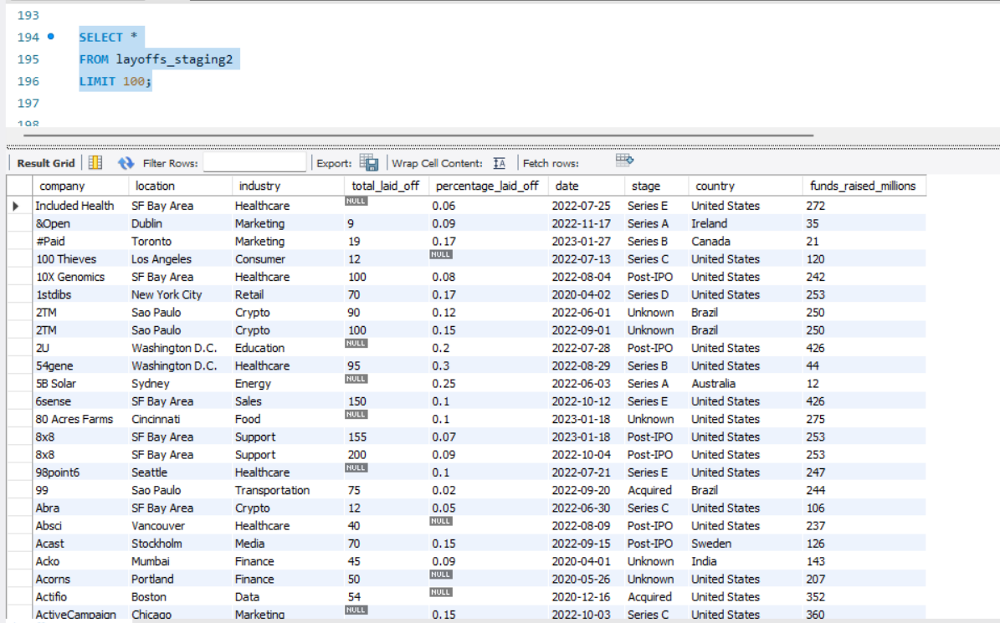
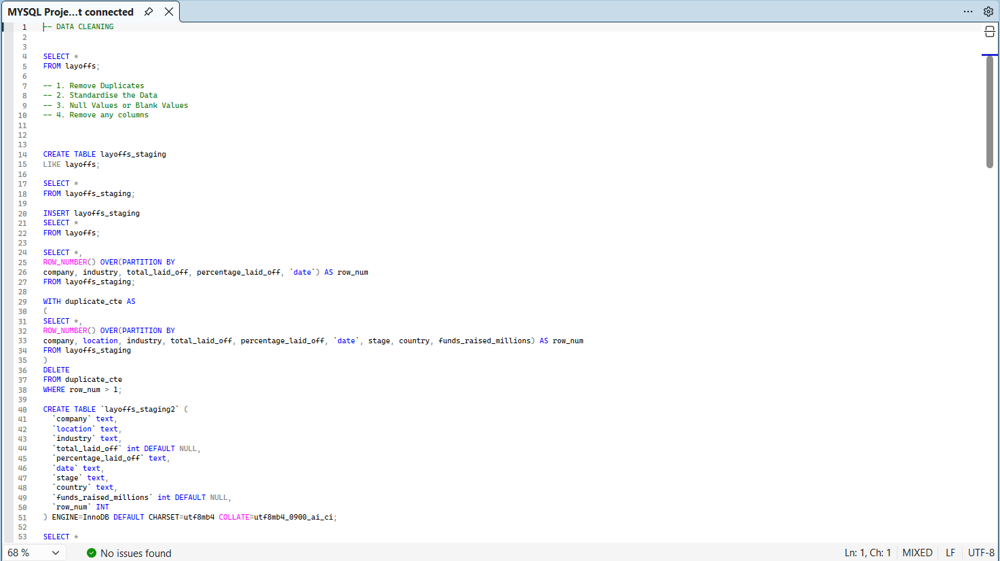

Structured MySQL Cleaning Workflow
The project applies a clear MySQL cleaning process to transform a raw layoffs dataset into a cleaner and more analysis-ready version. The full query workflow is documented in the GitHub repository.
A MySQL data cleaning project focused on improving data quality, standardising inconsistent values and preparing a raw global layoffs dataset for analysis.

This project demonstrates a structured MySQL data cleaning workflow applied to a raw global layoffs dataset. The aim was to improve the reliability, consistency and usability of the data before future exploratory analysis or reporting.
The cleaning process involved creating staging tables, identifying and removing duplicate records, standardising text fields, converting date values into a consistent format, handling null and blank values, filling missing industry values where possible and removing records without usable layoff information.
The project highlights an important foundation of analytics: raw data often needs to be cleaned and standardised before meaningful insights can be produced.
ROW_NUMBER() and PARTITION BY for identifying duplicate recordsTRIM() for text standardisationSTR_TO_DATE() for date conversion
The project applies a clear MySQL cleaning process to transform a raw layoffs dataset into a cleaner and more analysis-ready version. The full query workflow is documented in the GitHub repository.
ROW_NUMBER()PARTITION BYClean data is the foundation of accurate analysis. This project shows that I can take a raw dataset, protect the original data through staging tables and apply a logical MySQL workflow to improve consistency, completeness and usability.
It demonstrates practical data preparation skills that are directly relevant to analyst, business intelligence and reporting roles, where raw datasets often need to be cleaned before reliable insights can be produced.
The full MySQL workflow, including duplicate removal, value standardisation, null handling, date conversion and final column cleanup, is available in the GitHub repository.